{"expectedBeforeAfter": 68, "validBeforeAfter": 34, "captureCoveragePercent": 50.0, "counts": {"captured": 34, "missing": 34}, "featureSimilarity": null, "warning": "Capture coverage is not functional pass rate or visual similarity. Dialog images are additional and counted separately.", "dialogImageGroups": {"VA": {"uniqueImages": 17, "duplicateGroups": []}, "CA": {"uniqueImages": 0, "duplicateGroups": []}}, "validDialogImages": 17, "totalValidImages": 51}
전체 유사도 미확인. 화면별 원본 링크를 열어 확대할 수 있습니다. 스크린샷만으로 기능 통과를 인증하지 않습니다.
항목
VA
CA
feature-001 Feature 1
VA / before / captured [
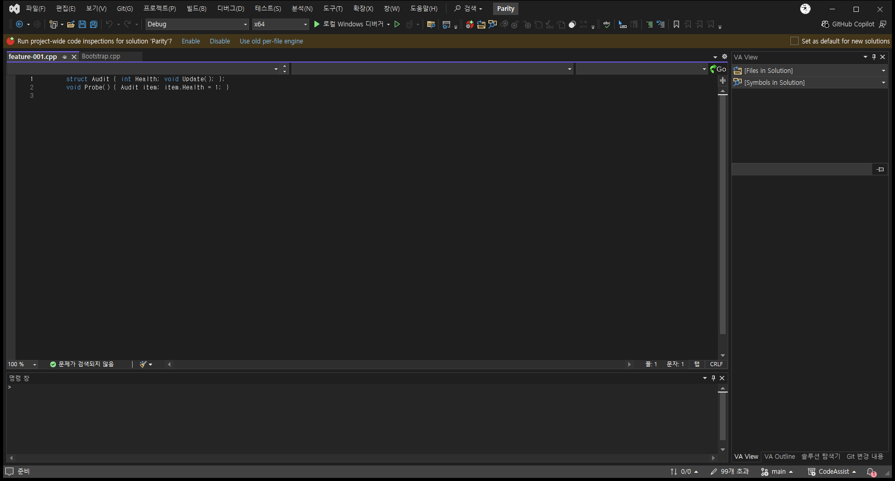
참고 화면](../assets/imports/docs/validation/automated-runner-20261018/20261018-021854-OptionsVerified/screenshots/VA-feature-001-before.png) VA / dialog / captured [
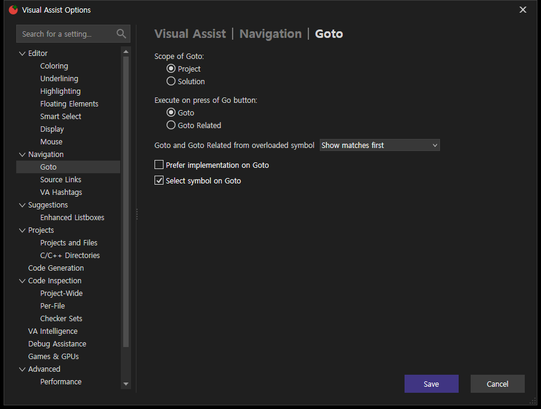
참고 화면](../assets/imports/docs/validation/automated-runner-20261018/20261018-021854-OptionsVerified/screenshots/VA-feature-001-dialog.png) VA / after / captured [참고 화면](../assets/imports/docs/validation/automated-runner-20261018/20261018-021854-OptionsVerified/screenshots/VA-feature-001-after.png)
CA / before / missing CA / dialog / missing CA / after / missing
feature-002 Feature 2
VA / before / captured [
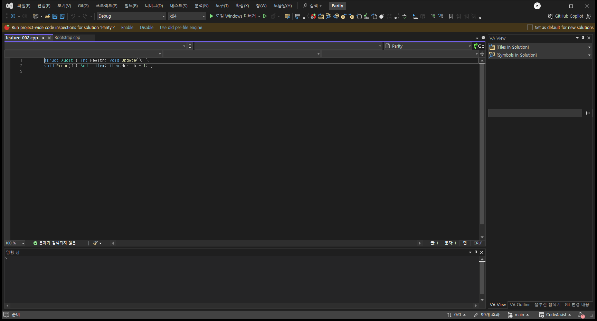
참고 화면](../assets/imports/docs/validation/automated-runner-20261018/20261018-021854-OptionsVerified/screenshots/VA-feature-002-before.png) VA / dialog / captured [
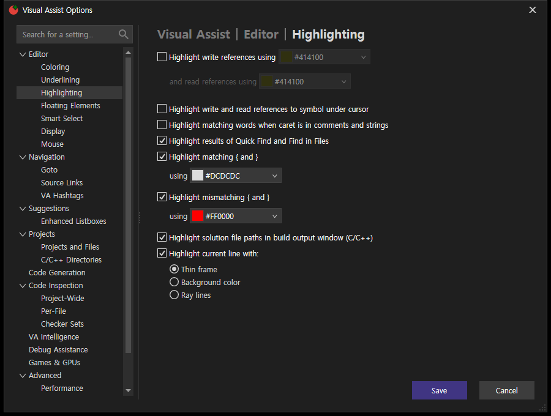
참고 화면](../assets/imports/docs/validation/automated-runner-20261018/20261018-021854-OptionsVerified/screenshots/VA-feature-002-dialog.png) VA / after / captured [
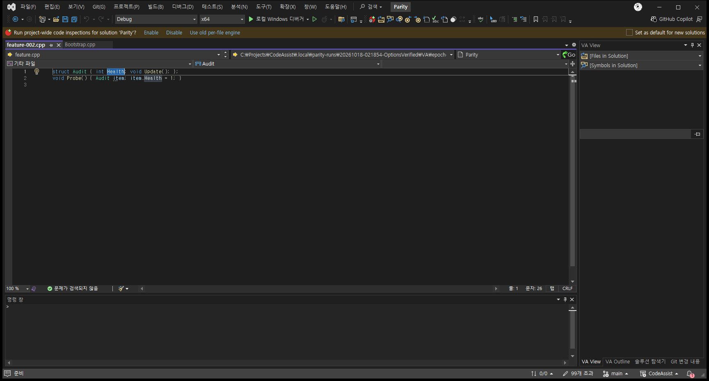
참고 화면](../assets/imports/docs/validation/automated-runner-20261018/20261018-021854-OptionsVerified/screenshots/VA-feature-002-after.png)
CA / before / missing CA / dialog / missing CA / after / missing
feature-008 Feature 8
VA / before / captured [참고 화면](../assets/imports/docs/validation/automated-runner-20261018/20261018-021854-OptionsVerified/screenshots/VA-feature-008-before.png) VA / dialog / captured [참고 화면](../assets/imports/docs/validation/automated-runner-20261018/20261018-021854-OptionsVerified/screenshots/VA-feature-008-dialog.png) VA / after / captured [참고 화면](../assets/imports/docs/validation/automated-runner-20261018/20261018-021854-OptionsVerified/screenshots/VA-feature-008-after.png)
CA / before / missing CA / dialog / missing CA / after / missing
feature-013 Feature 13
VA / before / captured [참고 화면](../assets/imports/docs/validation/automated-runner-20261018/20261018-021854-OptionsVerified/screenshots/VA-feature-013-before.png) VA / dialog / captured [참고 화면](../assets/imports/docs/validation/automated-runner-20261018/20261018-021854-OptionsVerified/screenshots/VA-feature-013-dialog.png) VA / after / captured [참고 화면](../assets/imports/docs/validation/automated-runner-20261018/20261018-021854-OptionsVerified/screenshots/VA-feature-013-after.png)
CA / before / missing CA / dialog / missing CA / after / missing
feature-045 Feature 45
VA / before / captured [참고 화면](../assets/imports/docs/validation/automated-runner-20261018/20261018-021854-OptionsVerified/screenshots/VA-feature-045-before.png) VA / dialog / captured [
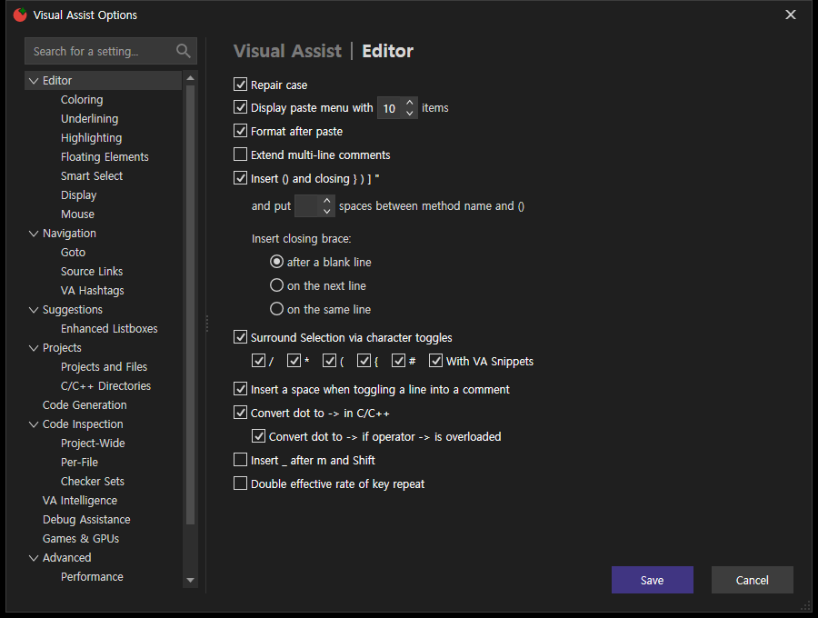
참고 화면](../assets/imports/docs/validation/automated-runner-20261018/20261018-021854-OptionsVerified/screenshots/VA-feature-045-dialog.png) VA / after / captured [참고 화면](../assets/imports/docs/validation/automated-runner-20261018/20261018-021854-OptionsVerified/screenshots/VA-feature-045-after.png)
CA / before / missing CA / dialog / missing CA / after / missing
feature-052 Feature 52
VA / before / captured [참고 화면](../assets/imports/docs/validation/automated-runner-20261018/20261018-021854-OptionsVerified/screenshots/VA-feature-052-before.png) VA / dialog / captured [
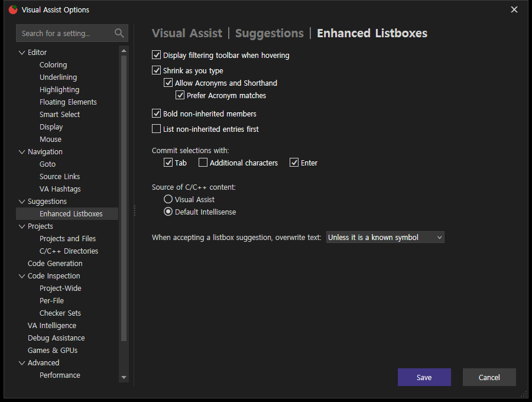
참고 화면](../assets/imports/docs/validation/automated-runner-20261018/20261018-021854-OptionsVerified/screenshots/VA-feature-052-dialog.png) VA / after / captured [참고 화면](../assets/imports/docs/validation/automated-runner-20261018/20261018-021854-OptionsVerified/screenshots/VA-feature-052-after.png)
CA / before / missing CA / dialog / missing CA / after / missing
feature-060 Feature 60
VA / before / captured [참고 화면](../assets/imports/docs/validation/automated-runner-20261018/20261018-021854-OptionsVerified/screenshots/VA-feature-060-before.png) VA / dialog / captured [참고 화면](../assets/imports/docs/validation/automated-runner-20261018/20261018-021854-OptionsVerified/screenshots/VA-feature-060-dialog.png) VA / after / captured [참고 화면](../assets/imports/docs/validation/automated-runner-20261018/20261018-021854-OptionsVerified/screenshots/VA-feature-060-after.png)
CA / before / missing CA / dialog / missing CA / after / missing
feature-074 Feature 74
VA / before / captured [참고 화면](../assets/imports/docs/validation/automated-runner-20261018/20261018-021854-OptionsVerified/screenshots/VA-feature-074-before.png) VA / dialog / captured [
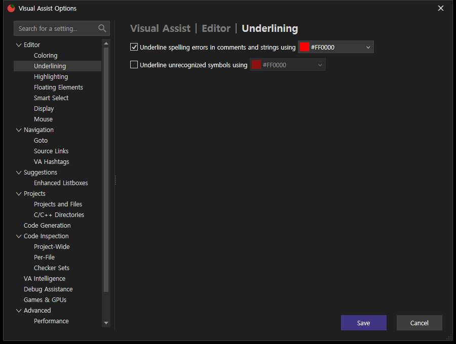
참고 화면](../assets/imports/docs/validation/automated-runner-20261018/20261018-021854-OptionsVerified/screenshots/VA-feature-074-dialog.png) VA / after / captured [참고 화면](../assets/imports/docs/validation/automated-runner-20261018/20261018-021854-OptionsVerified/screenshots/VA-feature-074-after.png)
CA / before / missing CA / dialog / missing CA / after / missing
feature-076 Feature 76
VA / before / captured [
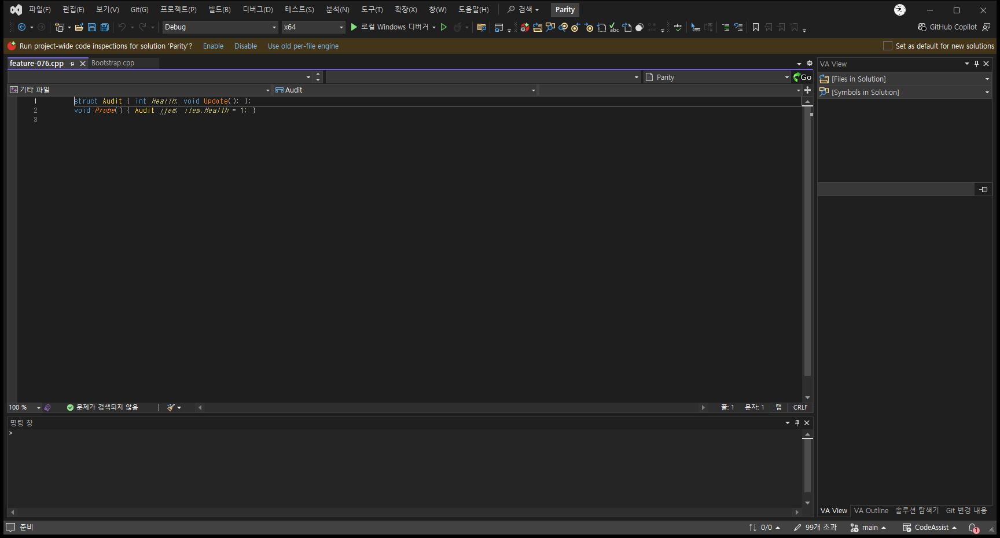
참고 화면](../assets/imports/docs/validation/automated-runner-20261018/20261018-021854-OptionsVerified/screenshots/VA-feature-076-before.png) VA / dialog / captured [참고 화면](../assets/imports/docs/validation/automated-runner-20261018/20261018-021854-OptionsVerified/screenshots/VA-feature-076-dialog.png) VA / after / captured [참고 화면](../assets/imports/docs/validation/automated-runner-20261018/20261018-021854-OptionsVerified/screenshots/VA-feature-076-after.png)
CA / before / missing CA / dialog / missing CA / after / missing
feature-077 Feature 77
VA / before / captured [참고 화면](../assets/imports/docs/validation/automated-runner-20261018/20261018-021854-OptionsVerified/screenshots/VA-feature-077-before.png) VA / dialog / captured [참고 화면](../assets/imports/docs/validation/automated-runner-20261018/20261018-021854-OptionsVerified/screenshots/VA-feature-077-dialog.png) VA / after / captured [참고 화면](../assets/imports/docs/validation/automated-runner-20261018/20261018-021854-OptionsVerified/screenshots/VA-feature-077-after.png)
CA / before / missing CA / dialog / missing CA / after / missing
feature-081 Feature 81
VA / before / captured [참고 화면](../assets/imports/docs/validation/automated-runner-20261018/20261018-021854-OptionsVerified/screenshots/VA-feature-081-before.png) VA / dialog / captured [
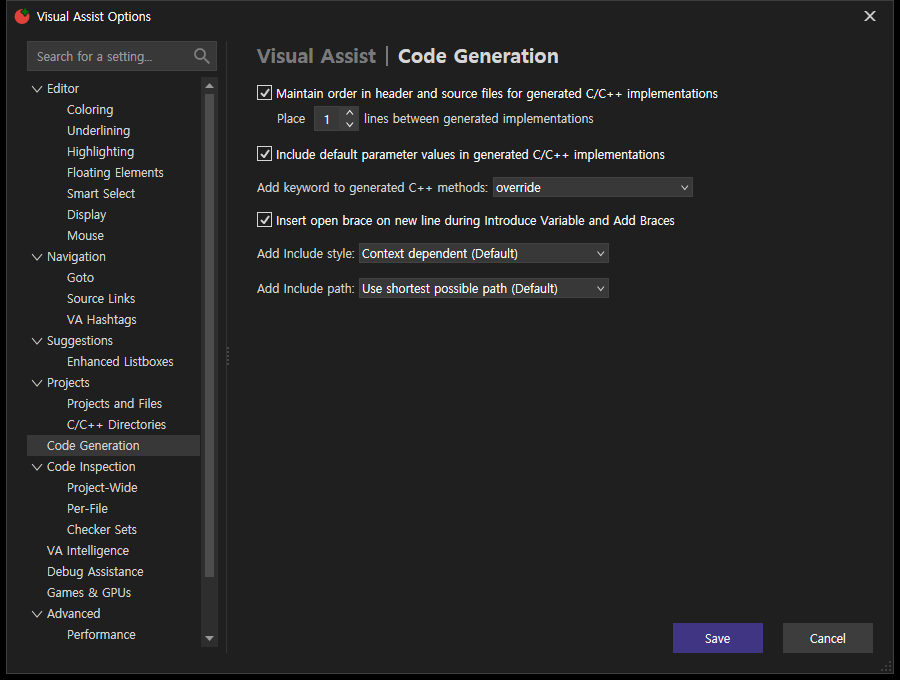
참고 화면](../assets/imports/docs/validation/automated-runner-20261018/20261018-021854-OptionsVerified/screenshots/VA-feature-081-dialog.png) VA / after / captured [참고 화면](../assets/imports/docs/validation/automated-runner-20261018/20261018-021854-OptionsVerified/screenshots/VA-feature-081-after.png)
CA / before / missing CA / dialog / missing CA / after / missing
feature-092 Feature 92
VA / before / captured [참고 화면](../assets/imports/docs/validation/automated-runner-20261018/20261018-021854-OptionsVerified/screenshots/VA-feature-092-before.png) VA / dialog / captured [참고 화면](../assets/imports/docs/validation/automated-runner-20261018/20261018-021854-OptionsVerified/screenshots/VA-feature-092-dialog.png) VA / after / captured [참고 화면](../assets/imports/docs/validation/automated-runner-20261018/20261018-021854-OptionsVerified/screenshots/VA-feature-092-after.png)
CA / before / missing CA / dialog / missing CA / after / missing
feature-095 Feature 95
VA / before / captured [참고 화면](../assets/imports/docs/validation/automated-runner-20261018/20261018-021854-OptionsVerified/screenshots/VA-feature-095-before.png) VA / dialog / captured [참고 화면](../assets/imports/docs/validation/automated-runner-20261018/20261018-021854-OptionsVerified/screenshots/VA-feature-095-dialog.png) VA / after / captured [
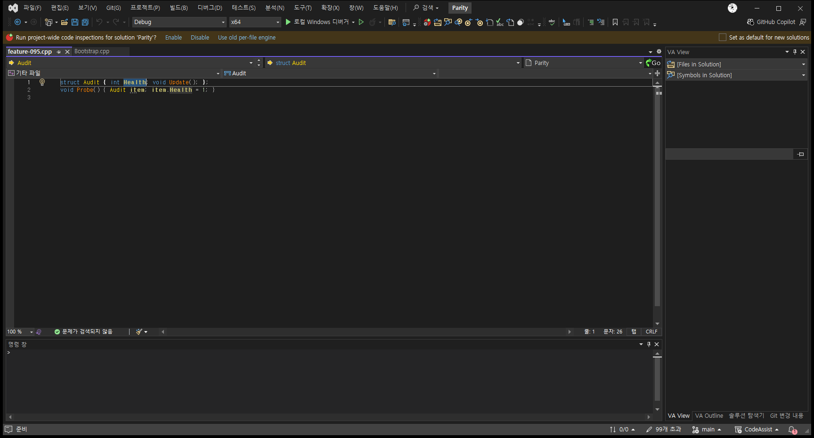
참고 화면](../assets/imports/docs/validation/automated-runner-20261018/20261018-021854-OptionsVerified/screenshots/VA-feature-095-after.png)
CA / before / missing CA / dialog / missing CA / after / missing
feature-102 Feature 102
VA / before / captured [
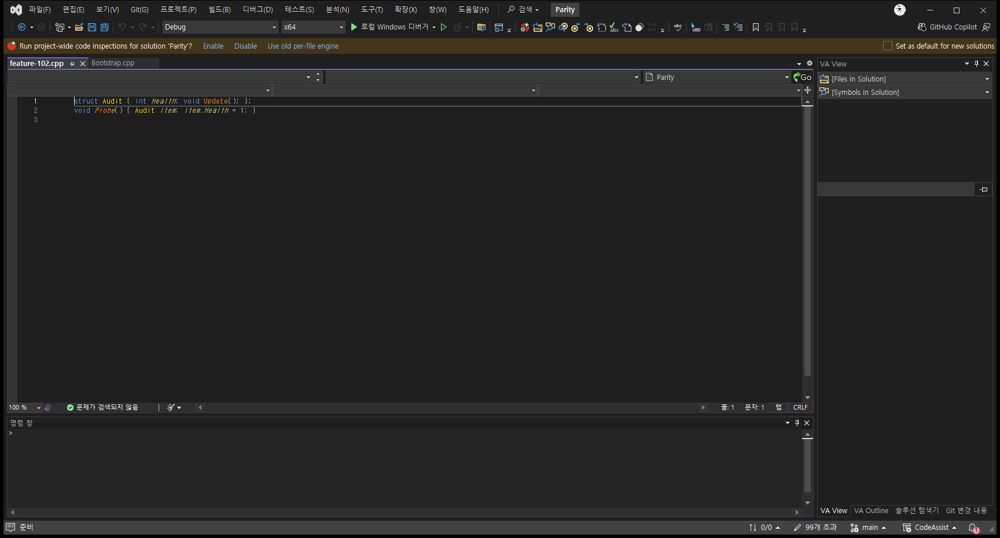
참고 화면](../assets/imports/docs/validation/automated-runner-20261018/20261018-021854-OptionsVerified/screenshots/VA-feature-102-before.png) VA / dialog / captured [
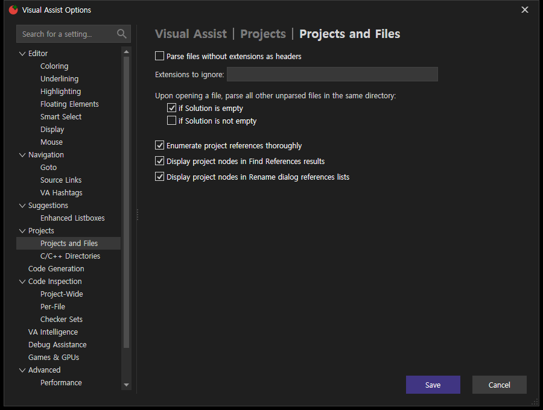
참고 화면](../assets/imports/docs/validation/automated-runner-20261018/20261018-021854-OptionsVerified/screenshots/VA-feature-102-dialog.png) VA / after / captured [참고 화면](../assets/imports/docs/validation/automated-runner-20261018/20261018-021854-OptionsVerified/screenshots/VA-feature-102-after.png)
CA / before / missing CA / dialog / missing CA / after / missing
feature-104 Feature 104
VA / before / captured [
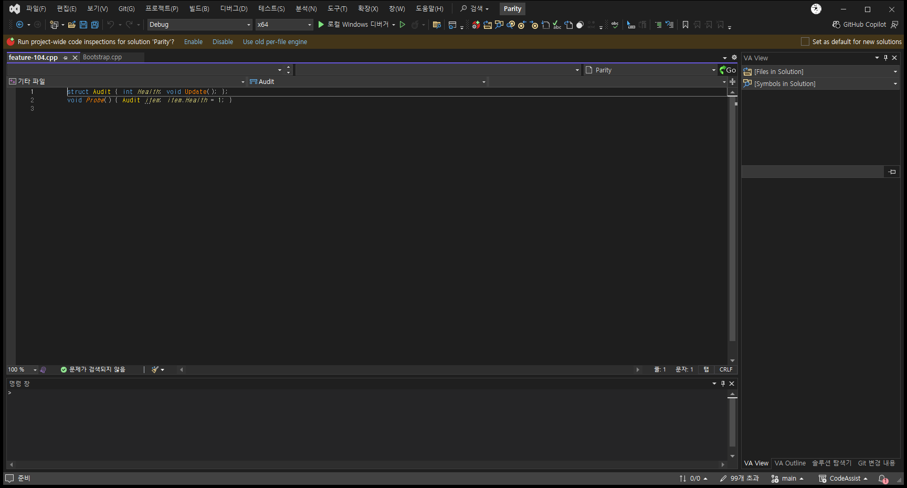
참고 화면](../assets/imports/docs/validation/automated-runner-20261018/20261018-021854-OptionsVerified/screenshots/VA-feature-104-before.png) VA / dialog / captured [참고 화면](../assets/imports/docs/validation/automated-runner-20261018/20261018-021854-OptionsVerified/screenshots/VA-feature-104-dialog.png) VA / after / captured [참고 화면](../assets/imports/docs/validation/automated-runner-20261018/20261018-021854-OptionsVerified/screenshots/VA-feature-104-after.png)
CA / before / missing CA / dialog / missing CA / after / missing
feature-106 Feature 106
VA / before / captured [참고 화면](../assets/imports/docs/validation/automated-runner-20261018/20261018-021854-OptionsVerified/screenshots/VA-feature-106-before.png) VA / dialog / captured [참고 화면](../assets/imports/docs/validation/automated-runner-20261018/20261018-021854-OptionsVerified/screenshots/VA-feature-106-dialog.png) VA / after / captured [
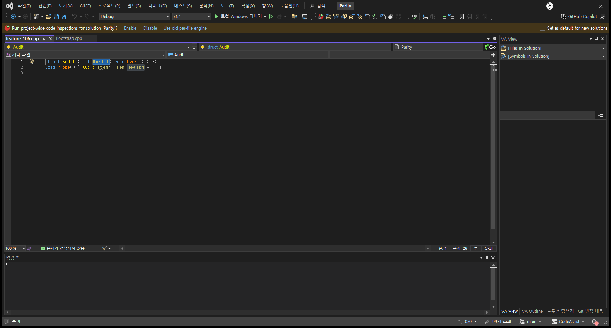
참고 화면](../assets/imports/docs/validation/automated-runner-20261018/20261018-021854-OptionsVerified/screenshots/VA-feature-106-after.png)
CA / before / missing CA / dialog / missing CA / after / missing
feature-107 Feature 107
VA / before / captured [참고 화면](../assets/imports/docs/validation/automated-runner-20261018/20261018-021854-OptionsVerified/screenshots/VA-feature-107-before.png) VA / dialog / captured [참고 화면](../assets/imports/docs/validation/automated-runner-20261018/20261018-021854-OptionsVerified/screenshots/VA-feature-107-dialog.png) VA / after / captured [참고 화면](../assets/imports/docs/validation/automated-runner-20261018/20261018-021854-OptionsVerified/screenshots/VA-feature-107-after.png)
CA / before / missing CA / dialog / missing CA / after / missing
 Tracefolio REPORTS & ISSUES
Tracefolio REPORTS & ISSUES](../assets/imports/docs/validation/automated-runner-20261018/20261018-021854-OptionsVerified/screenshots/VA-feature-001-after.png)
](../assets/imports/docs/validation/automated-runner-20261018/20261018-021854-OptionsVerified/screenshots/VA-feature-008-before.png)
](../assets/imports/docs/validation/automated-runner-20261018/20261018-021854-OptionsVerified/screenshots/VA-feature-008-dialog.png)
](../assets/imports/docs/validation/automated-runner-20261018/20261018-021854-OptionsVerified/screenshots/VA-feature-008-after.png)
](../assets/imports/docs/validation/automated-runner-20261018/20261018-021854-OptionsVerified/screenshots/VA-feature-013-before.png)
](../assets/imports/docs/validation/automated-runner-20261018/20261018-021854-OptionsVerified/screenshots/VA-feature-013-dialog.png)
](../assets/imports/docs/validation/automated-runner-20261018/20261018-021854-OptionsVerified/screenshots/VA-feature-013-after.png)
](../assets/imports/docs/validation/automated-runner-20261018/20261018-021854-OptionsVerified/screenshots/VA-feature-045-after.png)
](../assets/imports/docs/validation/automated-runner-20261018/20261018-021854-OptionsVerified/screenshots/VA-feature-052-after.png)
](../assets/imports/docs/validation/automated-runner-20261018/20261018-021854-OptionsVerified/screenshots/VA-feature-060-dialog.png)
](../assets/imports/docs/validation/automated-runner-20261018/20261018-021854-OptionsVerified/screenshots/VA-feature-060-after.png)
](../assets/imports/docs/validation/automated-runner-20261018/20261018-021854-OptionsVerified/screenshots/VA-feature-074-before.png)
](../assets/imports/docs/validation/automated-runner-20261018/20261018-021854-OptionsVerified/screenshots/VA-feature-074-after.png)
](../assets/imports/docs/validation/automated-runner-20261018/20261018-021854-OptionsVerified/screenshots/VA-feature-076-dialog.png)
](../assets/imports/docs/validation/automated-runner-20261018/20261018-021854-OptionsVerified/screenshots/VA-feature-077-before.png)
](../assets/imports/docs/validation/automated-runner-20261018/20261018-021854-OptionsVerified/screenshots/VA-feature-077-dialog.png)
](../assets/imports/docs/validation/automated-runner-20261018/20261018-021854-OptionsVerified/screenshots/VA-feature-092-dialog.png)
](../assets/imports/docs/validation/automated-runner-20261018/20261018-021854-OptionsVerified/screenshots/VA-feature-095-dialog.png)
](../assets/imports/docs/validation/automated-runner-20261018/20261018-021854-OptionsVerified/screenshots/VA-feature-104-dialog.png)
](../assets/imports/docs/validation/automated-runner-20261018/20261018-021854-OptionsVerified/screenshots/VA-feature-106-dialog.png)
](../assets/imports/docs/validation/automated-runner-20261018/20261018-021854-OptionsVerified/screenshots/VA-feature-107-dialog.png)